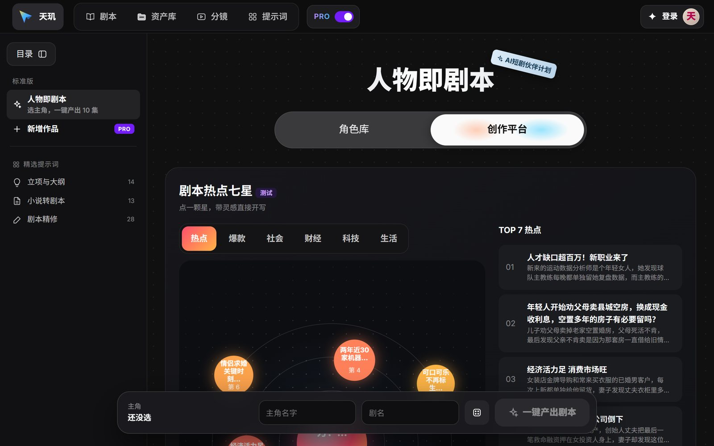
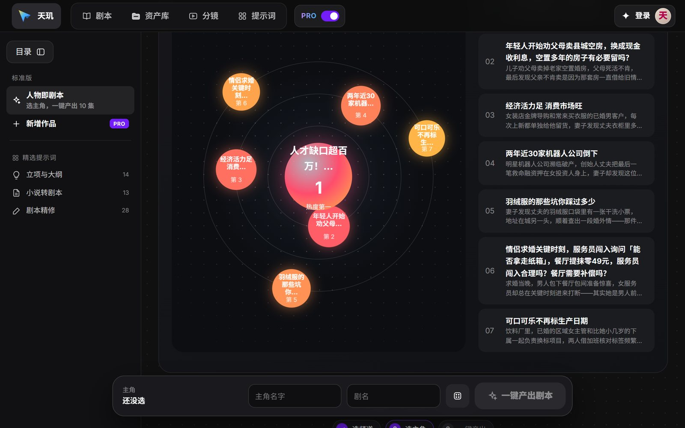
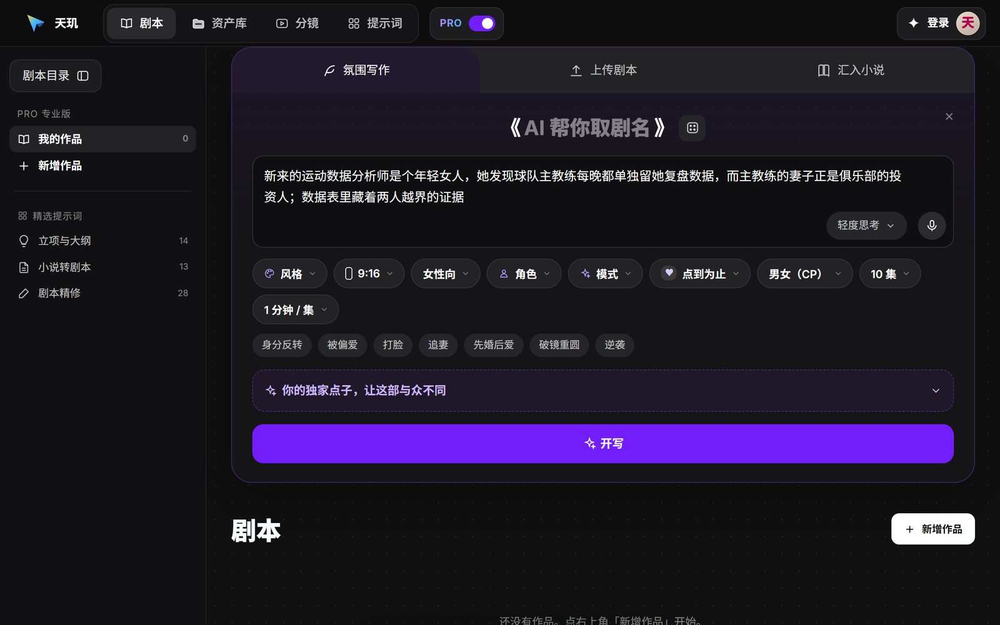
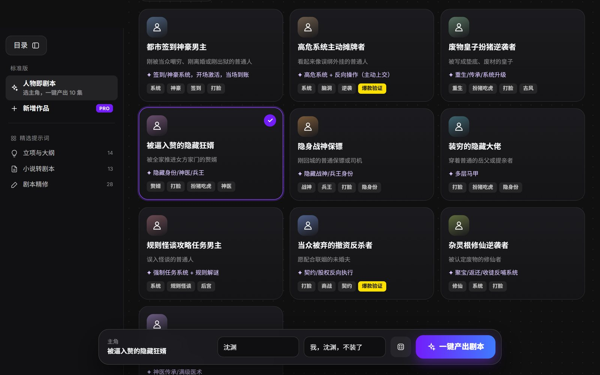
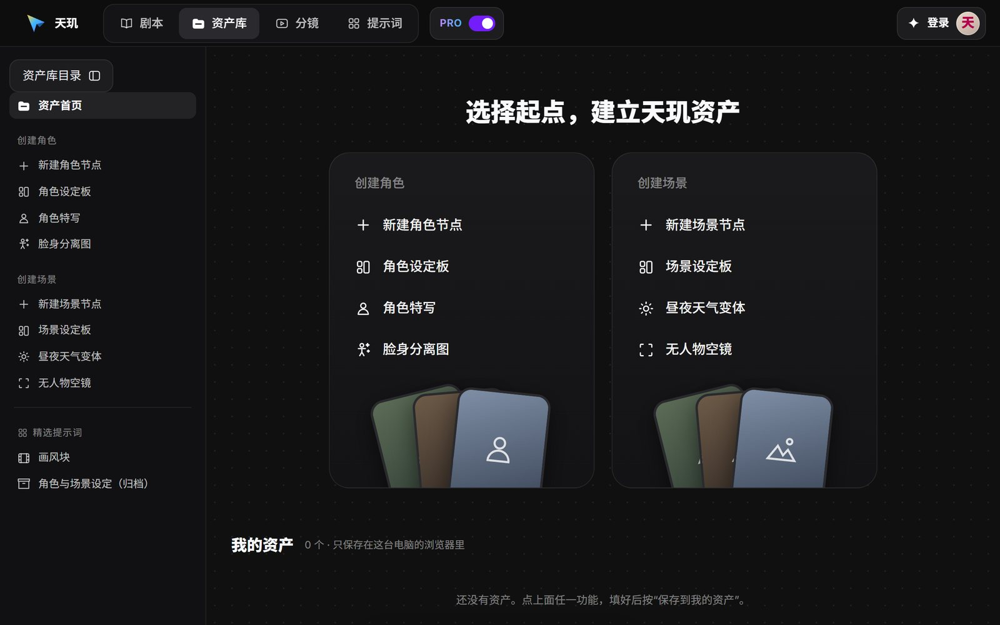

天玑快速上手
从热点星和角色库两个入口出发，看一条新闻怎么变成一部 10 集短剧。
天玑把热点新闻和爆款人设变成短剧剧本。挑一个话题或一个主角，确认几项设定，就能拿到一季完结的竖屏短剧剧本。

两段竖屏视频都是在天玑上实际操作录下来的，手机上看效果最好。
从热点星和角色库两个入口出发，看一条新闻怎么变成一部 10 集短剧。
一句话故事、画风、角色、模式、集数、爽点、独家点子、思考深度，逐项走一遍。
首页有两个入口。还没想好写什么，就从热点出发；已经知道想写哪种爽剧，就从主角出发。
热点分为热点、爆款、社会、财经、科技、生活六类，每类挑出热度最高的 7 条，每条都配好一个有冲突、有反转的短剧梗概。
在首页往下滑到「剧本热点七星」，先选上方的分类，再点任意一颗星。越靠中间的星热度越高；右侧的 TOP 7 列表可以先读梗概再决定。

点星之后会跳到「剧本 · 氛围写作」，梗概已经填进输入框，可以直接改成你自己的故事。下面每个设定都能点开调整：
再往下是常用爽点标签，点一下就加进去：

第一次开写时，天玑会请你输入手机号登录，登录后就开始生成剧本。生成好的作品会出现在「我的作品」里。
首页下方是角色库，收了一批跑出过成绩的爽剧主角，标着「爆款验证」的是被市场验证过的人设。
在角色库上方切换「男频」或「女频」。也可以直接在搜索框里搜角色、金手指或流派，例如「系统」「真假千金」。
每张卡片写着主角是谁、开局处境和金手指。点一下选中，底部栏会自动填上主角名字和剧名。名字和剧名都可以直接改，旁边的骰子按钮可以换一组。

默认产出 10 集、每集 1 分钟、一季完结的简体中文剧本。和路线 A 一样，第一次使用需要输入手机号登录。
顶部导航的另外三个页面，帮你把剧本变成能拍、能生成视频的素材。

给剧里的人物和场景建立固定档案，后面生成画面时长相和场景才不会跑掉。
90 条整理好的短剧提示词，复制给任何 AI 都能用。按流程分为立项与大纲、小说转剧本、剧本精修、视频生成、合规、归档。
例如「黄金前 3 秒开篇钩子」帮你写开头，「集尾断章公式」让观众忍不住点下一集。
之后可以把剧本拆成分镜表，再组装成每集 4～6 段的视频提示词。正式上线前，先用提示词库里「视频生成」分类和「6.0 组装器」。
浏览热点、角色库和提示词不用登录。按「开写」或「一键产出剧本」时，输入手机号即可开始。
没登录时，作品和资产只保存在这台电脑的浏览器里，换电脑、换浏览器或清除浏览器数据后会看不到。登录后，换装置也能接着写。
默认 10 集、每集 1 分钟、9:16 竖屏。在氛围写作的设定栏可以改成 10～80 集、每集 1～10 分钟，画幅也能换。
标着 PRO 的是专业版功能，例如「新增作品」。标准版就能用「人物即剧本」一键产出。